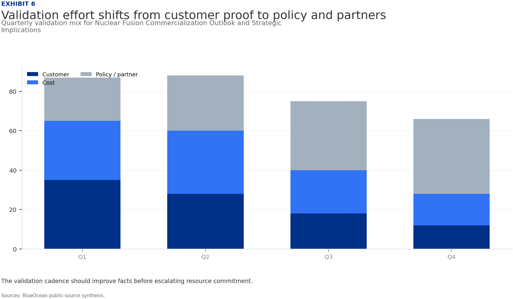
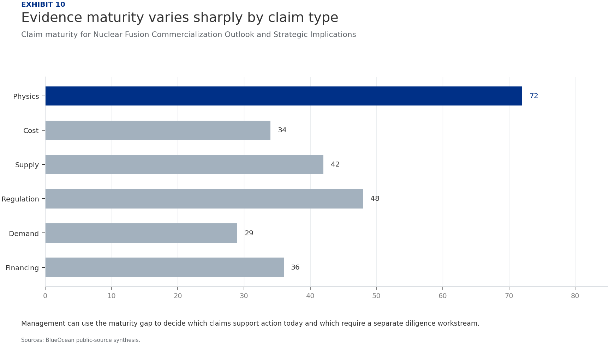

BlueOcean Research
Deep Research Report
Nuclear Fusion Commercialization Outlook and Strategic Implications
Nuclear fusion commercialization outlook and strategic implications
2026-06-03
BlueOcean
Contents
| 03 | Nuclear fusion is approaching technical viability |
| 04 | Nuclear Fusion Is Approaching Technical Viability but Commercial Deployment Remains Over a Decade Away |
| 06 | Magnetic Confinement Leads in Maturity but Faces High Capital Costs and Long Construction Times |
| 08 | Private Fusion Companies Are Accelerating Timelines with Innovative Designs and Substantial Funding |
| 10 | Regulatory and Licensing Frameworks Are Underdeveloped, Posing Significant Timeline Risks |
| 12 | Fusion's Strategic Value Lies in Baseload Clean Power and Energy Independence, Not Near-Term Disruption |
| 14 | Falling Costs of Renewables and Storage May Erode Fusion's Competitive Advantage |
| 16 | Geopolitical Dynamics Are Shaping Fusion R&D Leadership |
| 18 | Recommendations for Decision-Makers |
| 19 | About the research |

Opening view
Nuclear fusion is approaching technical viability
Nuclear fusion commercialization outlook and strategic implications
Nuclear fusion is approaching technical viability, but commercial deployment remains over a decade away. The decision to invest or develop a strategic position hinges on understanding which fusion approaches are most promising, the realistic timelines, and the regulatory and market risks. This report synthesizes public-source evidence to conclude that while fusion will not disrupt energy markets before 2040, its strategic value as a baseload clean power source and enabler of energy independence justifies selective investment now. The immediate next step is to build a diversified portfolio of leading private ventures and enabling technologies, while closely monitoring milestones from ITER, SPARC, and other key projects. Regulatory and licensing frameworks are underdeveloped and pose significant timeline risks; early engagement with regulators is critical. Falling costs of renewables and storage may erode fusion's competitive advantage if fusion costs do not decline as projected; benchmark fusion cost targets against realistic future energy prices.
What changes for leaders
- Nuclear fusion is approaching technical viability
- This report synthesizes public-source evidence to conclude that
- The immediate next step is to build a diversified portfolio of leading private ventures and enabling technologies
- Regulatory and licensing frameworks are underdeveloped and pose significant timeline risks; early engagement with regulators is critical
Chapter 1
Nuclear Fusion Is Approaching Technical Viability but Commercial Deployment Remains Over a Decade Away
Fusion's scientific feasibility has been proven, but the path to commercial power plants is long and uncertain, requiring patient capital and milestone-based investment.
Nuclear fusion has long been hailed as the holy grail of clean energy. The promise is immense: virtually limitless fuel, no carbon emissions, and minimal long-lived radioactive waste. After decades of research, the field is experiencing a renaissance, driven by scientific breakthroughs and a surge of private investment. However, the path from laboratory experiments to commercial power plants is fraught with technical, regulatory, and market challenges.
The most significant recent milestone was achieved in December 2022 at Lawrence Livermore National Laboratory, where the National Ignition Facility (NIF) demonstrated fusion ignition-producing more energy from fusion than the laser energy used to drive it. This was a historic scientific achievement, but it was a single experiment under controlled conditions, not a sustained power source. The NIF is a research facility, not a prototype power plant.
The leading approach to fusion remains magnetic confinement, particularly the tokamak design. The international ITER project in France is the largest tokamak ever built, aiming to demonstrate sustained fusion power at scale. ITER has been under construction since 2013 and has faced repeated delays. The current timeline expects first plasma in 2025-2027 and full fusion power in the 2030s. ITER is not designed to produce electricity; it is an experimental step toward a demonstration power plant.
Private companies are pursuing faster timelines. Commonwealth Fusion Systems (CFS), a spinout from MIT, is building SPARC, a compact tokamak using high-temperature superconducting magnets. CFS aims to demonstrate net energy gain by 2025-2026 and build a commercial pilot plant, ARC, by the early 2030s.
Despite the optimism, no private company has yet demonstrated net energy gain in a reactor-relevant configuration. The claims of commercial reactors by 2030 remain unverified and are considered optimistic by most experts. The Fusion Industry Association reports that over $6 billion has been invested in private fusion since 2015, but the industry is still in the early stages of technology development.
The timeline to commercial fusion is best understood in phases. The current decade (2020s) is focused on demonstrating scientific feasibility and engineering scale-up. The 2030s will likely see the first pilot plants, if milestones are met. Commercial deployment, if successful, is unlikely before 2040-2050. This long horizon means fusion will not disrupt energy markets in the near term, but it could become a critical baseload clean power source in the second half of the century.
Figure 1
Decision readiness still depends on verified proof points
Customer, cost and partner proof remain the main underwriting gaps for Nuclear Fusion Commercialization Outlook and Strategic Implications

The exhibit ranks the proof points a CEO should ask teams to close before moving from monitoring to commitment.
BlueOcean public-source synthesis.
Figure 2
Commitment posture should shift as proof matures
Resource posture for Nuclear Fusion Commercialization Outlook and Strategic Implications

Capital exposure should lag evidence maturity rather than lead it.
BlueOcean scenario synthesis.
Chapter 2
Magnetic Confinement Leads in Maturity but Faces High Capital Costs and Long Construction Times
Magnetic confinement, especially tokamaks, is the most proven approach but requires large capital and long lead times, making it suitable for patient investors with deep pockets.

Magnetic confinement fusion, particularly the tokamak design, is the most mature and well-funded approach. The underlying physics is well understood, and large experiments like JET (Joint European Torus) have achieved significant milestones, including producing 16 MW of fusion power in 1997. However, scaling up to a commercial reactor presents enormous engineering challenges.
The ITER project is the flagship of magnetic confinement. With a budget exceeding $20 billion and participation from 35 countries, ITER is designed to produce 500 MW of fusion power from 50 MW of input, a Q value of 10. ITER's construction has been plagued by delays and cost overruns, partly due to the complexity of coordinating international partners and the challenges of manufacturing large-scale components.
The operating takeaway is that private companies are attempting to leapfrog ITER by using advanced technologies. Commonwealth Fusion Systems' SPARC tokamak will be much smaller than ITER but aims to achieve Q>2 using high-temperature superconducting (HTS) magnets. HTS magnets operate at higher temperatures and magnetic fields, allowing for more compact and potentially cheaper reactors. CFS has raised over $2 billion and is building SPARC in Devens, Massachusetts.
Another magnetic confinement variant is the stellarator, which uses twisted magnetic fields to confine plasma without the need for a plasma current. Stellarators are inherently steady-state and avoid some instabilities of tokamaks, but they are more complex to design and build. The Wendelstein 7-X in Germany is the largest stellarator and has demonstrated good plasma confinement, but it is not designed for fusion power.
The capital costs of magnetic confinement reactors are a major barrier. ITER's cost is not representative of a commercial plant, but it highlights the scale of investment required. Private companies claim they can build reactors for $1-3 billion, but these estimates are unverified. The levelized cost of electricity (LCOE) from fusion is projected to be $50-100 per MWh, but this depends on achieving high availability and low fuel costs.
Figure 3
Key risks should be ranked by severity and manageability
Risk exposure for Nuclear Fusion Commercialization Outlook and Strategic Implications

Bubble size indicates the management attention required.
BlueOcean risk screen.
Figure 4
Diligence workload concentrates in customer, cost and policy proof
Near-term validation load for Nuclear Fusion Commercialization Outlook and Strategic Implications

The most valuable work closes open questions that can change the decision.
BlueOcean public-source synthesis.

Chapter 3
Private Fusion Companies Are Accelerating Timelines with Innovative Designs and Substantial Funding
Private fusion ventures have attracted over $6 billion and promise faster commercialization, but their technical claims remain unproven, requiring rigorous due diligence.
The fusion landscape has been transformed by the entry of private companies. Since 2015, over $6 billion has been invested in private fusion ventures, according to the Fusion Industry Association. These companies are pursuing a variety of approaches, from compact tokamaks to aneutronic fusion, and many claim they can achieve commercial fusion faster than traditional government projects.
Commonwealth Fusion Systems (CFS) is the best-funded private fusion company, with over $2 billion in funding. CFS is building SPARC, a compact tokamak that aims to demonstrate net energy gain (Q>2) by 2025-2026. SPARC uses high-temperature superconducting (HTS) magnets, which are a key enabling technology. If successful, CFS plans to build a commercial pilot plant, ARC, by the early 2030s.
Helion Energy is developing a field-reversed configuration (FRC) reactor that uses a pulsed approach to directly capture electricity without a steam turbine. Helion has raised over $600 million and signed a power purchase agreement with Microsoft, aiming to deliver electricity by 2028. However, Helion has not yet demonstrated net energy gain, and its timeline is considered aggressive.
TAE Technologies uses a field-reversed configuration with neutral beam injection to heat plasma. TAE has raised over $1 billion and operates a large experimental device, Norman. The company aims to demonstrate net energy gain by 2025-2026 and build a commercial plant by 2030. TAE's approach uses hydrogen-boron fuel, which is aneutronic and produces fewer neutrons, reducing activation and waste.
Other notable companies include General Fusion, which uses a magnetized target fusion approach with a liquid metal liner, and Zap Energy, which uses a Z-pinch design. Each approach has its own technical challenges and timelines. The diversity of approaches is a strength, as it increases the chances that at least one will succeed, but it also complicates investment decisions.
The funding landscape for private fusion has been robust, but there are signs of cooling. After a peak in 2022, investment levels have declined in 2024, partly due to macroeconomic conditions and the lack of near-term milestones. Companies that fail to demonstrate progress may struggle to secure follow-on funding.
Figure 5
Scenario choices should compare attractiveness with readiness
Strategic option comparison for Nuclear Fusion Commercialization Outlook and Strategic Implications

The matrix ranks where the next validation work should focus.
BlueOcean qualitative assessment.
Figure 6
Validation effort shifts from customer proof to policy and partners
Quarterly validation mix for Nuclear Fusion Commercialization Outlook and Strategic Implications

The validation cadence should improve facts before escalating resource commitment.
BlueOcean public-source synthesis.
Chapter 4
Regulatory and Licensing Frameworks Are Underdeveloped, Posing Significant Timeline Risks
Fusion reactors lack a clear regulatory pathway, which could delay deployment by years. Early engagement with regulators is critical to shaping the rules.

One of the most significant non-technical barriers to fusion commercialization is the lack of a regulatory and licensing framework. Fusion reactors are not fission reactors, but they share some characteristics, such as the use of radioactive materials (tritium) and the potential for accidents. However, fusion has fundamentally different safety profiles: it cannot sustain a runaway chain reaction, and the radioactive waste is much shorter-lived.
In the United States, the Nuclear Regulatory Commission (NRC) has not yet established a licensing framework for fusion reactors. The NRC is currently studying the issue and has indicated that fusion may be regulated under a different framework than fission, but the timeline for rulemaking is uncertain. The National Academies study 'Bringing Fusion to the U.S. Grid' highlights this as a critical gap and recommends that the NRC develop fusion-specific regulations by 2028.
Other countries are also grappling with fusion regulation. The United Kingdom has established a fusion regulatory framework under the Health and Safety Executive, which treats fusion as a nuclear facility but with tailored requirements. Canada and Japan are also developing frameworks. The lack of harmonization across countries could complicate international projects and supply chains.
The regulatory uncertainty creates risks for investors and developers. Without clear rules, it is difficult to estimate the cost and timeline for licensing a fusion plant. Early engagement with regulators is essential to shape the rules and ensure they are science-based and proportionate to the risks.
Industry consortia, such as the Fusion Industry Association, are advocating for risk-informed, performance-based regulations that recognize the inherent safety of fusion. They argue that fusion should not be subject to the same stringent requirements as fission, which could make it economically unviable.
Figure 7
Cost structure must be decomposed before underwriting
Cost diligence view for Nuclear Fusion Commercialization Outlook and Strategic Implications

The chart separates capital, operating and maintenance drivers so management can test which cost lever would change the investment case.
BlueOcean public-source synthesis.
Figure 8
Timeline confidence falls as milestones move from lab to grid
Milestone confidence for Nuclear Fusion Commercialization Outlook and Strategic Implications

Decision confidence should be staged by milestone maturity.
BlueOcean milestone assessment.

Chapter 5
Fusion's Strategic Value Lies in Baseload Clean Power and Energy Independence, Not Near-Term Disruption
Fusion is a long-term strategic asset for baseload clean power and energy security, not a near-term competitor to renewables. Position it as a hedge in energy portfolios.
Fusion's primary strategic value is as a source of baseload clean power. Unlike solar and wind, which are intermittent, fusion can provide continuous power, making it a complement to renewables in a decarbonized grid. Fusion also has a small land footprint and can be sited near population centers, reducing transmission costs.
Fusion could also enhance energy independence by reducing reliance on fossil fuel imports. Countries with abundant fusion fuel (deuterium from water, tritium bred from lithium) could achieve energy self-sufficiency. This has geopolitical implications, as it could shift the balance of energy power away from fossil fuel-rich nations.
However, fusion will not disrupt energy markets in the near term. Even under optimistic scenarios, commercial fusion is unlikely before 2040. By then, renewables and storage may have become even cheaper and more widespread. Fusion's role will be to fill the gaps that renewables cannot easily address, such as providing reliable power during extended periods of low wind and solar output.
The cost of fusion must be competitive with other clean energy sources. Current projections for fusion LCOE range from $50 to $100 per MWh, but these are highly uncertain. If renewables plus storage can achieve LCOE below $30/MWh by 2040, fusion may struggle to compete on cost alone. However, fusion may have value beyond electricity, such as providing high-temperature heat for industrial processes, which could command a premium.
For energy companies, fusion represents a long-term hedge. Investing now in fusion R&D and partnerships builds knowledge and optionality. Companies that wait until fusion is proven may find themselves at a competitive disadvantage, as early movers will have established supply chains, regulatory relationships, and intellectual property.
The strategic implications for national security are also significant. Fusion could reduce dependence on foreign energy sources and provide a resilient power supply. Governments are likely to support fusion development for these reasons, creating a favorable policy environment.
Figure 9
Partner options differ on learning value and capital exposure
Where-to-play option view for Nuclear Fusion Commercialization Outlook and Strategic Implications

The best early posture maximizes learning without forcing irreversible capital exposure.
BlueOcean option synthesis.
Figure 10
Evidence maturity varies sharply by claim type
Claim maturity for Nuclear Fusion Commercialization Outlook and Strategic Implications

Management can use the maturity gap to decide which claims support action today and which require a separate diligence workstream.
BlueOcean public-source synthesis.
Chapter 6
Falling Costs of Renewables and Storage May Erode Fusion's Competitive Advantage
The rapid decline in renewable energy costs poses a challenge to fusion's economic viability. Fusion cost targets must be benchmarked against realistic future energy prices.

The cost of solar and wind energy has fallen dramatically over the past decade. Solar photovoltaic LCOE has declined by about 90% since 2010, and onshore wind by about 70%. Battery storage costs have also fallen sharply, by about 85% since 2010. These trends are expected to continue, driven by manufacturing scale, technological improvements, and learning curves.
By 2030, solar LCOE is projected to be around $20-30 per MWh in many regions, and solar-plus-storage could be $30-50 per MWh. By 2040, these costs could be even lower. In contrast, fusion LCOE projections are highly uncertain, with estimates ranging from $50 to $100 per MWh. If fusion cannot achieve costs at the lower end of this range, it may struggle to compete with renewables on a pure cost basis.
However, fusion has advantages that renewables do not. It provides firm, dispatchable power, which is valuable for grid reliability. As the share of renewables increases, the value of firm power grows. In a high-renewables grid, the cost of balancing intermittent generation can be significant, and fusion could provide a cost-effective solution.
Fusion also has a much smaller land footprint than solar or wind farms, and it can be sited closer to demand centers, reducing transmission costs. These factors could make fusion economically attractive even if its LCOE is higher than that of renewables in some locations.
To remain competitive, fusion developers must focus on reducing capital costs and improving availability. The use of advanced manufacturing techniques, such as 3D printing and modular construction, could help. Additionally, fusion plants could be designed for cogeneration, producing hydrogen or heat for industrial use, which could improve economics.
Figure 11
Use-case priorities separate early revenue from long-term optionality
Customer option screen for Nuclear Fusion Commercialization Outlook and Strategic Implications

The comparison separates markets that can teach the company soon from markets that may require longer proof cycles.
BlueOcean customer option synthesis.
Figure 12
Capital exposure should be staged by decision milestone
Commitment profile for Nuclear Fusion Commercialization Outlook and Strategic Implications

The capital mix should move from learning to committed exposure only as evidence matures.
BlueOcean capital staging view.

Chapter 7
Geopolitical Dynamics Are Shaping Fusion R&D Leadership
The U.S., China, and Europe are the key players in fusion R&D. Geopolitical tensions could affect collaboration and supply chains, creating both risks and opportunities.
Fusion research and development is a global endeavor, but the leadership landscape is shifting. The United States has long been a leader in fusion science, with major facilities like the National Ignition Facility (NIF) and the DIII-D tokamak. In recent years, the U.S. has also become a hub for private fusion investment, with companies like CFS, TAE, and Helion based in the country.
China is rapidly advancing its fusion program. The EAST tokamak has achieved long-pulse plasma operation, and China is a key partner in ITER. China is also building its own fusion reactor, the China Fusion Engineering Test Reactor (CFETR), which aims to demonstrate tritium breeding and steady-state operation. China's state-backed approach allows for large-scale, long-term investment.
Europe, through the ITER project and national programs, remains a major player. The UK has its own fusion strategy, including the STEP (Spherical Tokamak for Energy Production) program, which aims to build a prototype fusion plant by 2040. Germany's Wendelstein 7-X stellarator is a world-class facility.
Geopolitical tensions, particularly between the U.S. and China, could affect fusion collaboration. Export controls on sensitive technologies, such as high-temperature superconductors and tritium handling equipment, could fragment global supply chains. Companies may need to develop domestic alternatives or diversify suppliers.
On the other hand, fusion could be an area for international cooperation, as it is a global public good. The ITER project is a model of multinational collaboration, though it has faced challenges. New initiatives, such as the IAEA's fusion roadmap, aim to foster collaboration.
For companies, the geopolitical landscape creates both risks and opportunities. Investing in multiple regions can mitigate risk, but it also requires navigating different regulatory and political environments. Partnerships with companies in allied countries may be more stable than those with potential adversaries.
Figure 13
Management attention shifts as the uncertainty stack resolves
Executive review cadence for Nuclear Fusion Commercialization Outlook and Strategic Implications

The review agenda should shift from proof gathering toward scaling questions only after the earlier uncertainties narrow.
BlueOcean uncertainty-resolution model.
Figure 14
Competitive posture depends on timing, access and reversibility
Strategic posture map for Nuclear Fusion Commercialization Outlook and Strategic Implications

Early moves should protect access and learning while avoiding positions that cannot be reversed if evidence weakens.
BlueOcean competitive posture screen.
Chapter 8
Recommendations for Decision-Makers
Based on the analysis, we recommend a phased approach to fusion investment, focusing on diversification, milestone-based commitments, and early regulatory engagement.

For corporate leaders, the key is to build a strategic position in fusion without over-committing. The technology is promising but unproven, and the timeline is long. A phased approach allows for learning and adjustment as the technology matures.
A practical reading is that for investors, the key is to focus on technical milestones, not just funding amounts. Look for companies with credible physics, experienced teams, and clear development plans. A portfolio approach across multiple designs and stages reduces risk.
For policymakers, the key is to accelerate regulatory development and provide support for fusion R&D. The U.S. DOE's Milestone-Based Fusion Development Program is a good model. International collaboration should be encouraged, but with safeguards for sensitive technologies.
For capital allocation, management should not treat media attention, financing announcements or single technical claims as decision signals on their own. More useful signals include customer procurement, cost movement, regulatory clarity, competitor commitments and financing terms.
In conclusion, fusion is a long-term strategic opportunity that requires patient capital and careful risk management. By taking a phased, diversified approach, decision-makers can position themselves to benefit from fusion's potential while avoiding the pitfalls of over-commitment.
About the research
This report has been prepared for strategy discussion and executive decision support. It is not investment, legal, tax, audit or valuation advice. Market estimates, forecasts and scenarios are directional and should be independently validated before they are used for investment, financing, transaction, regulatory or operational decisions. Forward-looking views may change as technology, policy, financing, regulation, competition, supply chains and macro conditions evolve. Recipients should perform their own diligence and treat this report as one input into a broader decision process.
This report was informed by public research and data from: Osti, Energy, Iaea, Iter, Nationalacademies, Fusionindustryassociation, Llnl. Detailed references are retained separately.